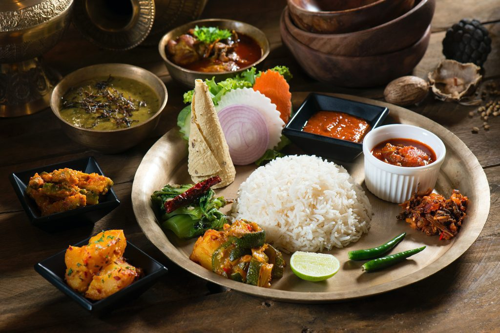
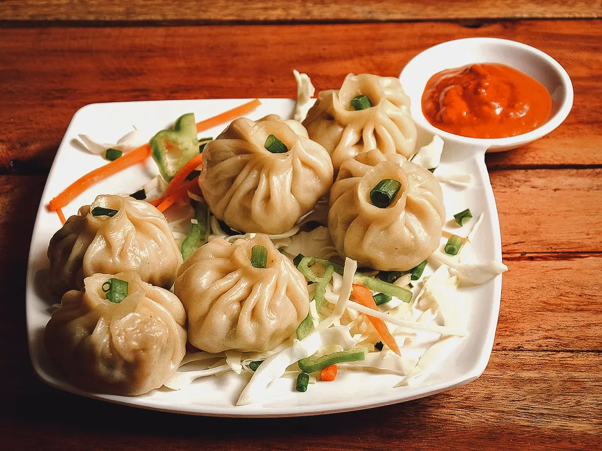
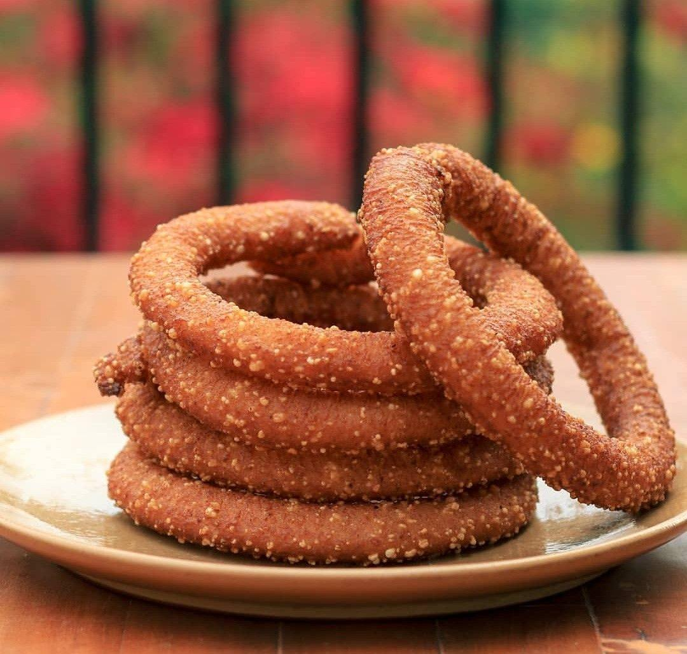

Dal Bhat Tarkari

Traditional Nepali meal.
Dal Bhat Tarkari is a traditional and staple meal in Nepal. It consists of lentil soup (dal), steamed rice (bhat), and vegetable curry (tarkari), often served with pickles. It is a balanced and nutritious food that is eaten daily by many Nepalese people for energy and health.
Momo

Popular dumplings.
Momo is a popular Nepali dumpling made from wheat flour dough filled with minced meat or vegetables, mixed with spices and herbs. It is steamed or sometimes fried and served with a spicy dipping sauce called achar. Momo is a favorite snack in Nepal and is enjoyed by people of all ages.
Selroti

Traditional food.
Selroti is a traditional Nepali festive food made from rice flour, sugar, milk, and spices. It is shaped like a ring and deep-fried until golden brown, giving it a crispy outside and soft inside. It is commonly prepared during festivals like Tihar and Dashain.
Tharu cultural food

Cultural food.
This dish shows a variety of traditional dishes from the Tharu community of Nepal, beautifully arranged on green leaf plates that highlight their natural and cultural style of serving food. The dishes include fried fish, spicy pickles, lentil-based snacks, and cooked snails in a rich gravy placed at the center, which is a popular delicacy in Tharu cuisine. Each item displays unique textures and vibrant colors, from crispy fried foods to flavorful curries. The use of leaf plates and the patterned cloth background reflects the traditional and rustic lifestyle of the Tharu people, especially during festivals and community gatherings.